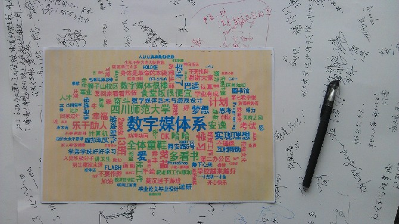

尊敬的各位领导、老师，亲爱的同学们：
大家好！首先感谢院系让我代表2012届数字媒体系全体毕业生表达心声的机会！请允许我代表全体毕业生对培养我们的母校和老师们表示衷心的感谢！祝愿我们的母校蒸蒸日上，欣欣向荣；祝愿我们的老师身体健康，桃李满园；祝愿各位学弟、学妹身心愉悦，学业有成！
那一年，曾记否，风华正茂，意气风发。2008年，我们踏着地震的余威，从五湖四海来到了美丽的锦官城，物华天宝人杰地灵的天府大地，成都，一个你来了就不想走的城市，这里的美食美女所有的东西……现在想起是不是每件物品都会勾起你我的特殊的回忆。重重的我来了。
那一年，拉登还没挂掉，魔兽世界方兴未艾，甲流禽流席卷而来，同学们调侃道：成都，一个你来了就走不脱的城市。最终同学们在跟流感的PK中完胜，神马浮云，也终于在三聚氰胺和地沟油中活到了现在。
那一年，论天下合久必分，分久必合，同学们经历了分班，分方向，分专业，最后又分回来，现在又马上要分别，有些人可能还要分手。真是千般的眷恋，万般的不舍，依依惜别之情溢于言表。
那一年，那些年。长亭外，古道边，芳草碧连天……
胡适先生曾经给大学毕业生开过三味药防身：
第一味药叫做“问题丹”。第二味药叫做“兴趣散”。第三味药叫做“信心汤”。
第一味药“问题丹”。就是说，每个人离开学校，总得带一两个麻烦而有趣味的问题在身边做伴，这是我们入世的第一要紧的救命宝丹。问题是一切知识学问的来源。年轻入世的时候，总得有一个两个不大容易解决的问题在脑子里，时时向你挑战。只要你有问题跟着你，你就不会懒惰，你就会继续有知识上的长进。
第二味药叫做“兴趣散”。这就是说，每个人进入社会，总得多发展一点专门职业以外的兴趣。四年前选择的专业，是不是自己选择的自由志愿；自己现在还感觉自己手里的文凭是不是真可以代表每个人终身的志愿、终身的兴趣；自己在这四年里，有没有发现什么新的、业余的兴趣；在这四年里，有没有发现自己的本行以外的才能。总而言之，一个人应该有他的职业，又应该有他的非职业的玩意儿，不是为吃饭而是心里喜欢做的，用闲暇时间做的——这种非职业的玩意儿，可以使生活更有趣、更快乐、更有意思。有时候，一个人的业余活动也许比他的职业还更重要。
第三味药，叫做“信心汤”。这就是说，你总得有一点信心。我们生存的这个年头，看见的、听见的，往往都是可以叫我们悲观、失望的。叫我们伤心，叫我们发疯的这个时代，正是我们要培养我们的信心的时候，没有信心，我们真要发狂了。我们的信心只有一句话“努力不会白费”，没有一点儿努力是没有结果的。
红日初升，其道大光；河出伏流，一泻汪洋；潜龙腾渊，鳞爪飞扬；乳虎啸谷，百兽震惶；鹰隼试翼，风尘翕张；奇花初胎，郁郁皇皇；干将发硎，有作其芒；天戴其苍，地履其黄；纵有千古，横有八荒；祝大家前途似海，来日方长。与天不老！与国无疆！
重重的我走了，正如我重重的来。
我想对广大男生说：千年修得同寝宿，万年修得上下铺。珍惜大学生活。我想对广大女生说：不管以后是谁的女人，但今天都是我们的女生。祝各位同学，男生找个好老婆，女生嫁个好老公。
苍茫的川师是我的爱，绵绵的狮子山下花正开。
最后在这里请允许我代表全体毕业生向辛勤培育我们的领导、老师发自内心地道一声“谢谢”！向敬爱的领导、老师说一声“你们辛苦了”！我们要秉承母校师大校训 “重德、博学、务实、尚美”来勉励自己，开创属于自己的新天地！我们一定坚定信念、吃苦耐劳、以才报国、勇于创新、不断进取、攀登高峰，做社会的栋梁之才，用母校赋予我们的知识和智慧描绘出壮美的人生画卷！
谢谢大家！
Bismarck
2012年6月28日
